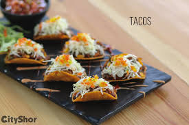
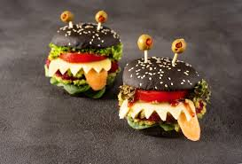

Noticias
OPEN!¿Alguien dijo Open?.... Asi es, ya que estamos cerca de abrir una segunda sucursal en la calle Pase de locutores esquina Calle Winston Armaud, donde podras encontrar una gran variedad de rectas nuevas... En esta nueva sucursal tenemos una area de recreación para niños, imaginate disfrutar de nuestros grandes platos. |
|
|---|---|
Nueva chef!Inés Páez Nin, Chef Tita, es una reconocida chef dominicana que ha sido catalogada como “Embajadora de la Nueva Cocina Dominicana ante el mundo” por ser la primera chef en enfocar su línea de cocina al rescate del patrimonio gastronómico y recetas ancestrales del país, mediante su proyecto destinado a motivar el consumo y uso de los productos locales. De entre sus platos emblemáticos destacan las mandiocas horneadas y servidas con espuma de tucupí, leche de coco y aceite de oliva a la trufa blanca, así como los ñoquis de mandioquiña con pesto de acederas, piñones tostados y lascas de parmesano, el bombón de guacamole, el ceviche de caju o la okra con gambas y aceite de dendé |
|
Nuevos platosLa comida mediterránea es de las preferidas por quienes se declaran amantes del buen comer. El Stella Mediterranean Style, concentra su especialidad en este tipo de comida, y la aceptación por parte de los dominicanos no se ha hecho esperar.
Astro's presenta sus nuevos platos, y a través de una nota, los da a conocer. El menú está conformado por platos con un nuevo enfoque hacia la cocina saludable, algo que está en boga y que los ejecutivos del establecimiento ponderan.Los platos fuertes incluyen cacerola de langosta, el chillo de la casa, relleno de arroz “thai” con plátano maduro, el risotto “Yin Yan y el Crusted” de salmón. El soufflé de batata es el que representa la carta de postre que completa el menú saludable. |
 |
HalloweenEs hora de linternas de calabaza! Invitamos a fantasmas, duendes y todos los demás amigos disfrazados a una fiesta de disfraces de Halloween. Venga a Astro's el 31 de octubre, a las 8:00 de la tarde. ¡Lleve un compañero y le proporcionamos sidra, refrescos y diversión! ¡Confirme su asistencia antes de que los gatos chillan, los perros aúllan y las calabazas se llevan adentro para su salvaguardia!
Tambien tendremos ofertas por motivo a noche de brujas donde podra encontrar combos tales como:
|
 |
25 Aniversario:¡Venga a celebrar con nosotros el 25 aniversario de nuestra apertura! restaurantes Astro's ha servido a la comunidad dominicana desde el junio de 1972, cuando John Doe primero vendió las primeras hamburguesas y heladas fuera del quiosco en la calle principal. Desde entonces nos hemos mudado a un hermoso espacio en el edificio Springfield Plaza y nuestro negocio se ha convertido en uno de los restaurantes más exclusivos en el pais.
El mes de junio será un mes de celebración en Astors. Estamos celebrando con las ventas de todas las carnes mas finas y costosas del mercado a un precio de escandalo!, y habrá una promoción de una hamburguesa Astros que tiene un valor de $805.00 y solo por el mes de junio estara a tan solo $205.00. No podríamos haber logrado 25 años sin nuestra clientela fiel, ¡y esperamos poder servirle aun mejor durante los próximos 25 años! |
 |